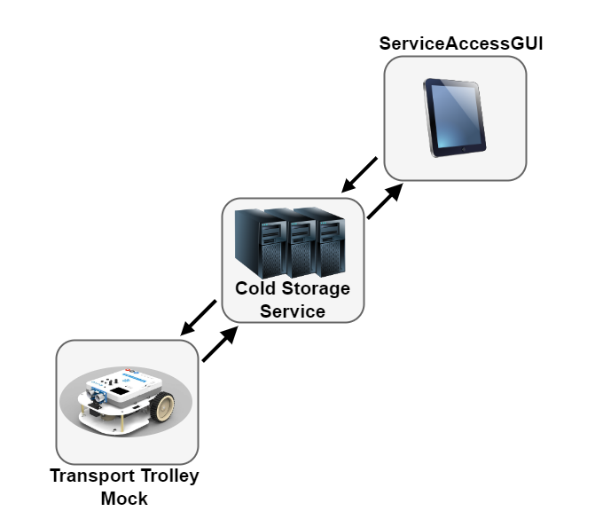
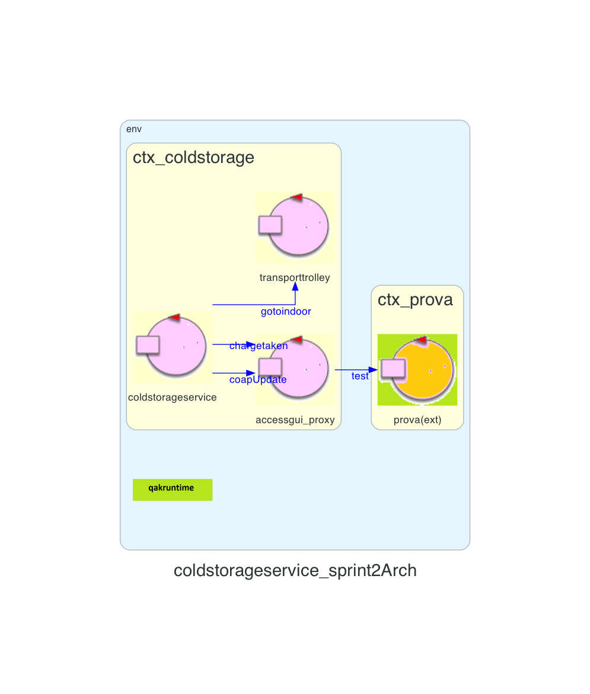
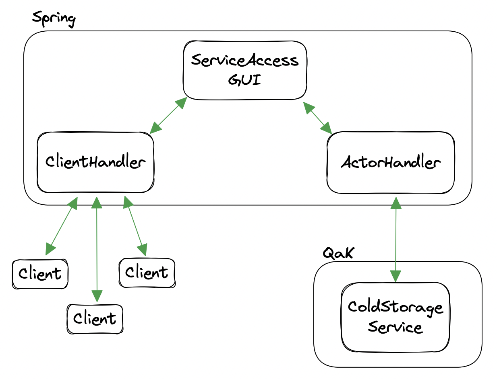
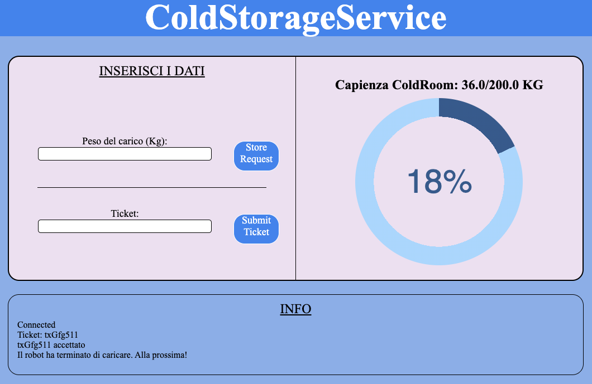

Introduction
Lo Sprint2 è il naturale prosieguo di quanto realizzato nello Sprint1. Dopo aver delineato, realizzato e testato il Core Business del sistema, composto dal ColdStorageService e Transport Trolley, possiamo proseguire sostituendo il simulatore della ServiceAccessGUI con il componente reale.Requirements
Descrizione del
TemaFinale23
Goals Sprint 2
- Identificare ed analizzare tutti i problemi relativi ai requisiti che coinvolgono la ServiceAccessGUI
- Integrare al sistema realizzato nello Sprint1 la ServiceAccessGUI, che permette l'interazione tra il conducente del Fridge Truck ed il servizio ColdStorageService
- Realizzare l'interfaccia grafica
- Testare il sistema
Requirement analysis
Chiarimenti del committente
L'interazione con il committente ha permesso di chiarire alcuni aspetti del progetto:- La ServiceAccessGUI deve essere unica e visualizzabile da qualunque dispositivo connesso a internet
- I conducenti dei Fridge Truck inseriscono i ticket solo quando si trovano davanti alla INDOOR
- L'analisi richiestaci in merito all'uso di Ticket in applicazioni già diffuse è presente nella apposita sezione dell'Analisi del Problema
Chiarimenti con il committente
- Strategia da utilizzare in merito alla problematica di assenza di una coda di Truck e potenziale elevato
numero di Ticket emessi in attesa di essere serviti dal Servizio.
(Si veda la apposita sezione)
Sistema
Lo Sprint2 prevede l'interazione tra due componenti principali: ServiceAccessGUI e ColdStorageService.Ai fini di test includiamo nelle interazioni anche il componente MockTransportTrolley, che rappresenta in questo Sprint un componente reattivo che simulerà l'invio di istruzioni al DDR Robot.

Analisi
Dai requisiti espressi nel Tema Finale e dalle analisi già effettuate negli Sprint0 e Sprint1, in questo Sprint occorre analizzare le entità:- ServiceAccessGUI, che è una interfaccia grafica per interagire con il servizio
- ColdStorageService, per verificare che sia pienamente compatibile con il workflow una volta introdotta la GUI
- Richiesta di emissione di un ticket specificando il peso che si intende depositare
- Richiesta di scarico (inserendo un ticket presso la INDOOR)
Analisi del Problema
Il corpo di questo Sprint è il componente ServiceAccessGUI.ServiceAccessGUI
Soluzione: Questo componente, che potremmo descrivere come esterno al sistema, svolge il ruolo di intermediario tra i conducenti ed il ColdStorageService, mediante una interfaccia grafica che permette l'invio di richieste al servizio. Queste richieste, come da requisiti, sono due:
- storerequest: richiesta di erogazione di un ticket. Contiene l'informazione del peso FW del carico.
- insertticket: richiesta di servizio di scarico presso l'INDOOR. Contiene l'informazione del numero del ticket corrispondente.
La ServiceAccessGUI è una interfaccia grafica per interagire con il Servizio e
ottenerne informazioni sullo stato
Soluzione: Si deduce che la ServiceAccessGUI deve essere fornita di:
- un campo per inserire il peso ed un pulsante per effettuare la richiesta storerequest.
- un campo per inserire il ticket ed un pulsante per effettuare la richiesta insertticket.
- una finestra che mostri il peso corrente presente nella ColdRoom.
La ServiceAccessGUI deve essere fornita di due campi di input per effettuare
le richieste e uno spazio dove mostrare le informazioni relative alla Coldroom
Soluzione: Per avere un riscontro dal Servizio se le richieste vanno o meno a buon fine, è necessario che i messaggi inviati da ColdStorageService vengano visualizzati a schermo, opportunamente filtrati e formattati per mostrare solo informazioni utili agli utenti finali.
La ServiceAccessGUI deve consentire all'utente finale di comprendere se la
richiesta effettuata sia andata o meno a buon fine, mostrando solo le informazioni strettamente necessarie
Soluzione: Dopo un confronto con il committente lo scenario che si presenta per interagire con il nostro servizio è scomponibile in due parti:
- I conducenti dei Fridge Truck che si stanno direzionando verso il ColdStorageService sono
interessati a capire se
c'è posto per scaricare il loro carico, per questo motivo tramite il loro dispositivo mobile accedono
alla GUI che permetterà loro di:
- Vedere il peso presente nella ColdRoom
- Richiedere l'erogazione di un ticket. Nel caso venga rifiutata, verrà mostrato un opportuno messaggio di errore
- Una volta arrivato presso il servizio il conducente procederà all'inserimento del
ticket.
Se è approvato, il conducente verrà informato dei vari step operativi del servizio. Se è rifiutato, gli verrà comunicato il motivo.
La ServiceAccessGUI verrà visualizzata sui dispositivi mobili dei conducenti
Soluzione: Per quanto riguarda il peso della ColdRoom mostrato, la ServiceAccessGUI si impegna solamente a mostrare il peso che riceve dalla ColdStorageService ogni qualvolta avviene un cambiamento.
Considerando come si è modellata la politica di prenotazione dei ticket nel ColdStorageService, si potrebbe decidere che un conducente che accede alla ServiceAccessGUI veda solo il peso effettivamente presente nella ColdRoom, e non anche quello prenotato. Ciò potrebbe portare a scenari dove un conducente vede attraverso la ServiceAccessGUI che il suo carico è ideoneo ma la sua richiesta storerequest viene rifiutata per spazio insufficiente. Questo è dovuto al fatto che non mostrando anche il peso prenotato c'è l'illusione che ci sia posto quando in realtà è stato già riservato.
Per ovviare a questa problematica è sufficiente mostrare il peso complessivo, sommando al peso effettivamente presente all'interno della ColdRoom il peso prenotato. A questo proposito andrebbe modificata l'informazione contenuta dentro il messaggio coldroomdata precedentemente delineato nello Sprint1, che fino ad ora conteneva solo il peso corrente della ColdRoom.
La GUI è sufficiente mostri il totale, in quanto vedere il peso prenotato potrebbe considerarsi una informazione sensibile che espone il fuzionamento del Servizio a un utente che non ne ha interesse.
La ServiceAccessGUI deve mostrare il peso della ColdRoom come somma
del peso effettivamente presente con quello prenotato.
Politica esubero Ticket non gestiti
Durante l'analisi compiuta nello Sprint1 si è deciso di permettere a un solo Truck per volta di interagire con il servizio, dando al massimo la possibilità di inserire il proprio Ticket quando ancora il DDR Robot sta completando le operazioni del precedente. Questa scelta di non gestire una coda di Truck che hanno inserito il proprio ticket e aspettano di scaricare porta alla conseguenza che i Ticket potrebbero scadere in attesa che la zona INDOOR del servizio sia vuota.Per non cambiare drasticamente il Servizio (operazione che può essere rimandata ad un aggiornamento futuro nel caso in cui l'esperienza pratica porti a conclusioni diverse in merito alle necessità del committente) indichiamo tre possibilità per alleviare il problema:
- Il coldstorageservice deve rifiutare le richieste di storage non solo guardando allo spazio disponibile, ma anche guardando la quantità di ticket erogati ancora facenti parte del sistema (che cioè non hanno ricevuto il messaggio chargetaken). In questo caso andrebbe stabilito un numero massimo di Ticket disponibili contemporaneamente.
- Quando viene erogato il ticket viene comunicato al conducente anche quanti potenziali altri conducenti si trovano davanti a lui. Si tratta di "potenziali" perché non è assicurato che tutti raggiungano il servizio entro TICKETTIME.
- Simile alla precedente ma, invece di inviare il numero di persone che si trovano davanti, si mostra l'informazione direttamente sulla ServiceAccessGUI. In questo modo si responsabilizza il conducente dandogli una scelta informata.
Nel caso invece si richieda un cambiamento di politica di accettazione Ticket, introducendo ad esempio una coda, il costo sarebbe maggiore in quanto sarebbe necessaria una operazione di correzione dell'intero ColdStorageService.
Politica invio messaggi a client connessi
Un certo numero di Truck Driver può essere connesso al sistema nello stesso momento, ognuno con la propria sessione ServiceAccessGUI. Non tutte le informazioni che il Servizio manda sono di interesse per tutti i Driver. Ad esempio, chi effettua una richiesta di scarico vorrà essere l'unico a vedere il Ticket corrispondente, in maniera tale da evitare che qualcun'altro usi il suo codice. Allo stesso modo, eventuali messaggi di successo o errore sono di interesse esclusivo di chi ha effettuato le richieste, anche per non creare confusione.D'altro canto, tutto ciò che è controllato direttamente dal Servizio potrebbe essere mostrato a tutti i client connessi senza problemi; ad esempio, quali Ticket sono "chargetaken" e quali hanno il proprio carico correttamente scaricato nella ColdRoom. Questo lascerebbe la possibilità, nel caso si volesse scorporare il componente di visualizzazione messaggi, di creare un monitor che mostri lo stato di tutti i ticket presenti nel Servizio in un dato momento, come nei Fast Food è visibile da tutti lo stato degli ordini man mano che vengono processati.
Per riassumere:
| Informazione | Visibilità |
|---|---|
| Conferma prenotazione / errore | Richiedente |
| Ticket / errore | Richiedente |
| Stato Cold Room | Tutti |
| Charge taken | Tutti |
| Deposito avvenuto | Tutti |
| Altro | Tutti |
È necessario che venga garantito l'invio al solo client interessato nel caso di informazioni "private".
ColdStorageService
Questo componente può rimanere invariato nella logica operativa, una volta aggiornato il metodo di generazione e controllo Ticket introducendo una sequenza randomica di lettere e numeri come identificativo.Per quanto riguarda il dialogo con la ServiceAccessGUI, rendendo quest'ultimo un Observer del Service possiamo aggiornare in maniera agevole l'informazione relativa al peso.
ServiceAccessGUI
L'architettura logica del sistema vedrà l'introduzione di un componente che si comporti da intermediario per qualunque scelta tecnica venga presa in merito alla realizzazione della GUI. Questo componente si dovrà porre tra il ColdStorageService e la GUI vera e propria gestendo la comunicazione da entrambi i lati, diventando un ponte tra le tecnologie: da una parte il sistema QaK e dall'altro il server che gestirà i client ServiceAccess. L'utilità di questo componente sta quindi nell'adattare il modello a stati e a scambio di messaggi, utilizzato sinora, alla comunicazione con un server esterno e potenzialmente estraneo a questi paradigmi.TransportTrolley
Ai fini di questo Sprint, il componente TransportTrolley può essere sostituito con un Mock che simuli il dialogo con il DDR Robot. Così facendo, escludiamo momentaneamente le complessità tecniche e i tempi di attesa di questo componente, che rallenterebbero lo sviluppo e i test.Interazioni
Le interazioni precedentemente definite nello Sprint1 trovano riscontro anche in questo Sprint2, con poche differenze:- Vengono mantenute le interazioni storerequest e insertticket, come richiesto dai requisiti del committente
- L'interazione coldroomdata viene rinominata coapUpdate, in quanto la ServiceAccessGui sarà un observer di ColdStorageService.
Architettura logica
Codice QAK per la modellazione del sistema: ColdStorageService.qak
Il sistema da noi modellato presenta la seguente architettura logica:

Test plans
Testare la GUI si compone di due parti distinte:- Test Unitari sui singoli componenti di back-end
- Verifica comportamento corretto front-end e servizio in toto, con Test End-to-End sull'intero sistema
Test Unitari
I Test Unitari possono essere effettuati utilizzando JUnit. Dovranno concentrarsi sia sugli attori generati dal modello QaK sia sulle singole risorse aggiuntive come Ticket.kt e TicketManager.kt, aggiornati in questo Sprint per supportare la nuova scelta di identificativo dei ticket stessi.Ovviamente, tutti i test già delineati in precedenza dovranno continuare a essere validi.
| Test | Entità coinvolte | Scenario | Comportamento atteso |
|---|---|---|---|
| Funzionalità TicketManager | TicketManager Ticket |
Test di ogni metodo delle classi TicketManager e Ticket, tra cui: creazione manager, aggiunta ticket, generazione Id e Timestamp, rimozione ticket, ricerca per Id o Timestamp, cambio di stato da waiting a working, etc. | I componenti presentano un corretto funzionamento |
| Store Request | ServiceAccessGui ColdStorageService |
Viene inviata una serie di messaggi contententi diverse richieste di storage a
ServiceAccessGui,
che interagirà di conseguenza con ColdStorageService per confermarle o rifiutarle. |
|
| Insert Ticket | ServiceAccessGui ColdStorageService |
Viene inviata una serie di messaggi contententi diverse richieste di inserimento ticket a ServiceAccessGui, che interagirà di conseguenza con ColdStorageService per confermarle o rifiutarle. |
|
| Aggiornamento stato ColdRoom | ServiceAccessGui ColdStorageService |
La ServiceAccessGui deve ricevere gli aggiornamenti di peso da ColdStorageService | Richiesta di storage per N kg seguita da inserimento ticket entro tempo di timeout -> ricezione coapupdate con peso prenotato pari a N. Dopo un certo numero di secondi (a operazioni di scarico concluse), ricezione coapupdate con peso prenotato pari a 0 e reale pari a N. |
Test End-to-End
Il servizio andrà testato dal punto di vista dell'utente finale, il Truck Driver, provando che gli stessi test descritti nella sezione precedente continuino a essere validi anche se ogni richiesta è effettuata tramite GUI.Project
Per realizzare la ServiceAccessGUI scegliamo come tecnologia Spring, in quanto la Software House ne ha già esperienza. Questo framework necessita di pochi componenti per funzionare e mantiene la comunicazione tra client e server mediante Websocket.Delineiamo due tipi diversi di connessioni: quelle tra Client e Server Spring e quelle tra il Server Spring e ColdStorageService.
Le classi che ci serviranno saranno quindi:
- Application, il main del programma che istruirà Spring di avviare l'applicazione
- WebSocketConfiguration, dove definiremo due tipi di Handler: Client (comunicazione C/S) e Actor (comunicazione Server/QaK)
- ClientHandler, che manterrà le sessioni con i Client connessi, intercettando le richieste e inoltrando le risposte
- ActorHandler, che scambierà messaggi con il ColdStorageService
- Controller, che gestirà le pagine web mostrate ai client (path degli url, eventuali variabili, etc...)
Il seguente schema riassume il passaggio di messaggi tra i vari componenti:

Il server Spring non è un Attore QaK, quindi la comunicazione con l'attore ColdStorageService deve avvenire in maniera diversa dal solito. Una connessione tramite WebSocket è creata dal ColdStorageService al Server, mentre una normale connessione TCP dal Server al ColdStorageService.
Il ColdStorageService manderà al Server i messaggi nella forma tipo/contenuto[/id richiesta]. Questo modello viene scelto anche per la comunicazione tra Server e Client.
Il Server invierà invece i suoi messaggi al ColdStorageService con la stessa semantica propria del modello QaK.
Per quanto riguarda l'interfaccia, un semplice prototipo mostrerà i campi di input, una finestra per i messaggi ed un componente per visualizzare lo stato della ColdRoom:

Testing
La tecnologia scelta per il front-end, Spring, non offre le funzionalità necessarie a testare lo scambio di messaggi attraverso WebSocket nell'ambito dei test JUnit. Risulta inoltre impossibile controllare il corretto funzionamento del lato JavaScript dell'applicazione. Per questo, va considerato l'utilizzo di un framework esterno per effettuare i Test End-to-End, come ad esempio Cypress.js.Conclusioni
Gli output dello Sprint2 sono:
- Una ServiceAccessGUI operativa e funzionante
- Versione aggiornata ColdStorageService
- MockTransportTrolley
Goals Sprint 3
Si possono definire in seguito i goal relativi allo Sprint3:- Identificare ed analizzare tutti i problemi relativi ai requisiti che coinvolgono la Alarm Device e il Warning Device
- Integrare al sistema realizzato nello Sprint2 la Alarm Device e il Warning Device, che esprimono gli Alarm Requirements
- Sviluppare il software ed eseguirlo su una scheda Raspberry Pi con i componenti hardware collegati
- Testare il sistema
By
Tassinari Gabriele, email: gabriele.tassinari2@studio.unibo.it
Baraldi Leonardo, email: leonardo.baraldi@studio.unibo.it
Koss Krystian, email: krystian.koss@studio.unibo.it


GIT repo: https://github.com/4utotune/ColdStorageService/
Tassinari Gabriele, email: gabriele.tassinari2@studio.unibo.it
Baraldi Leonardo, email: leonardo.baraldi@studio.unibo.it
Koss Krystian, email: krystian.koss@studio.unibo.it
GIT repo: https://github.com/4utotune/ColdStorageService/